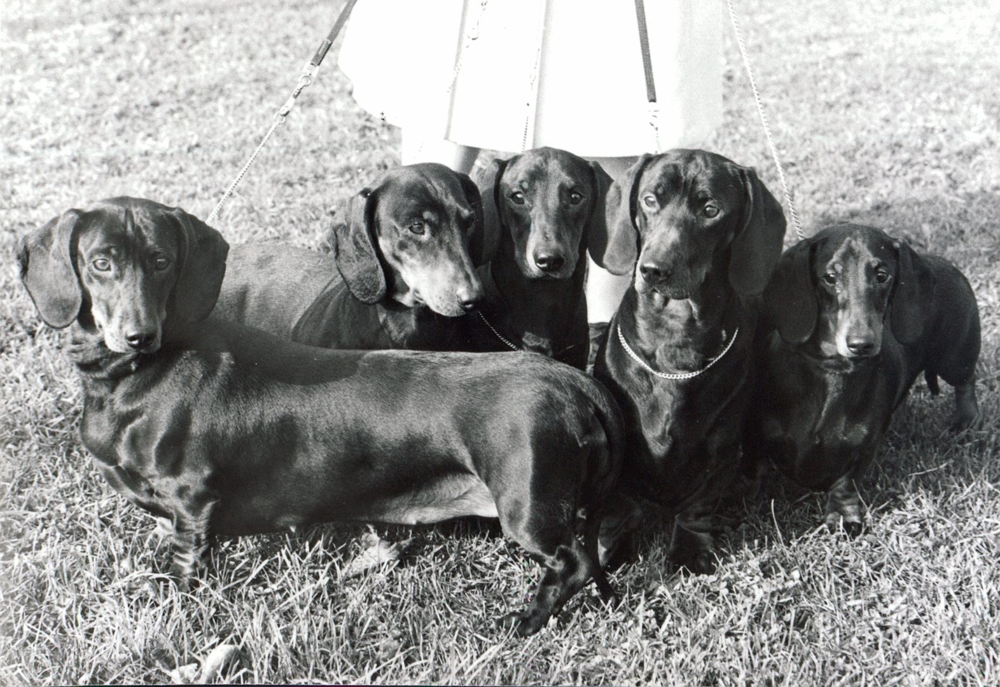

Origin of the Dachshund
The Dachshund was bred in Germany and the word Dachshund means "Badger Dog". Therfore, Dachshunds were used to hunt badgers and other small prey like hares and ferrets. Dachshunds are able to dig and enter burrows easily, so it makes them a perfect breed for hunting small animals. Dachshunds are still used for hunting around the world, so they haven't lost any advantage overtime.
Changes in Variation
It is believed that the smooth coat Dachshund was the original Dachshund variation. This makes sense as they are usually seen as the most aggressive and least obedient variation. Kaiser Wilhelm II owned two Dachshunds named Wadl and Hexl, and both were described as biting and snarling little brutes. The longhaired variation resulted from selective breeding of smooth coat Dachshunds with varying coat lengths. And the wirehaired variation of Dachshunds are believed to be associated with the Terrier breed. This is a plausible theory as wirehaired Dachshunds are seen as the most obedient variation.
Source: Hampdach Dachshunds, 2021